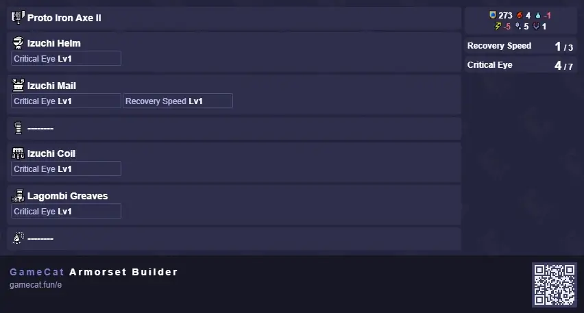
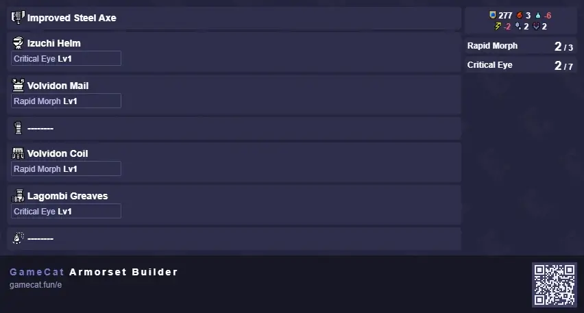
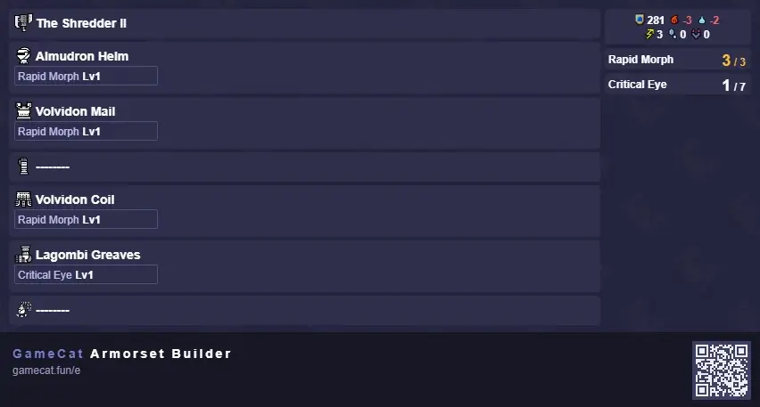
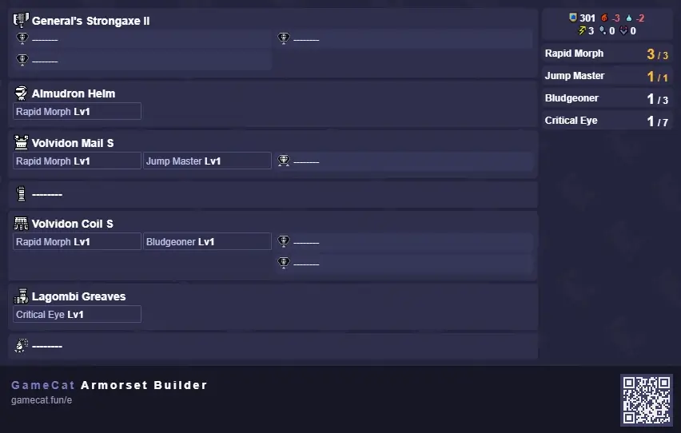
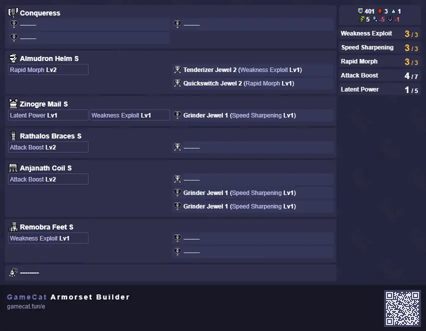
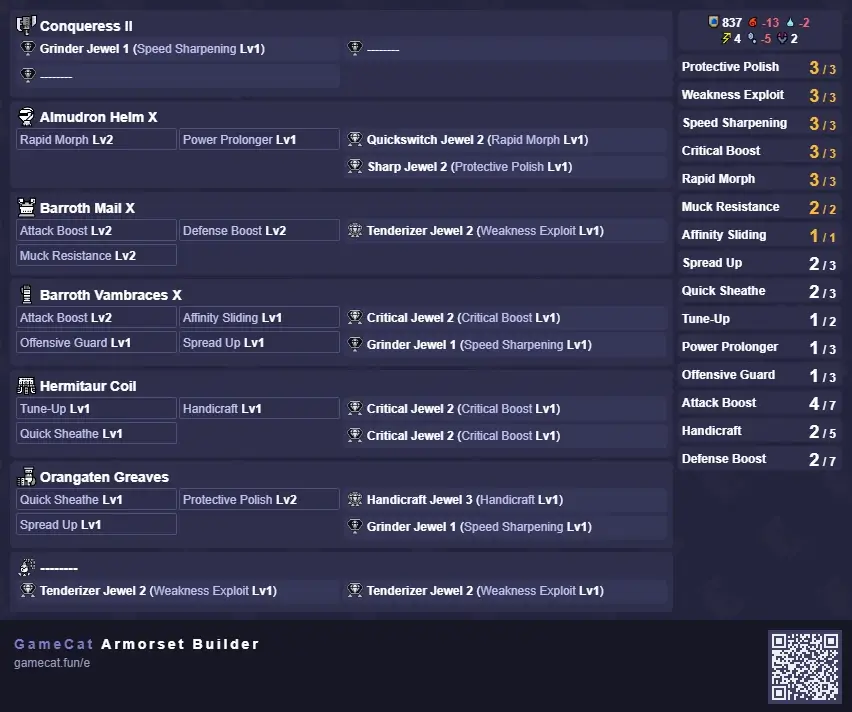
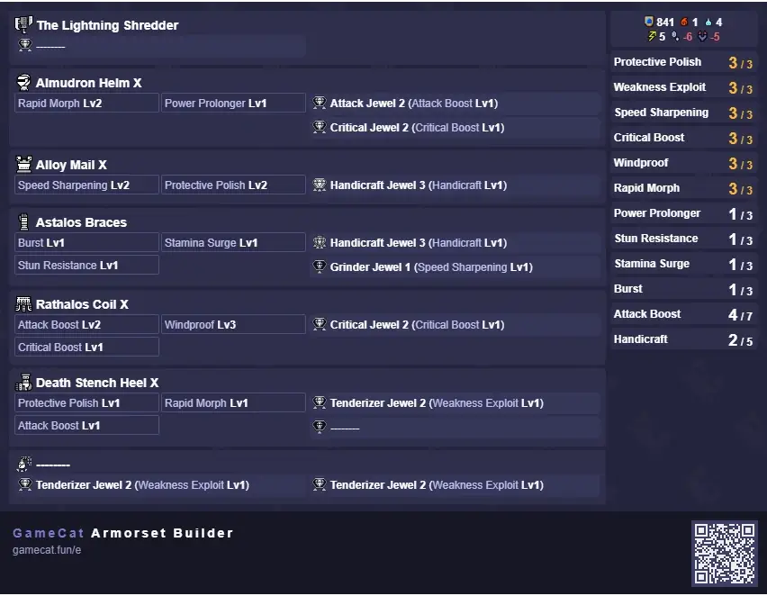
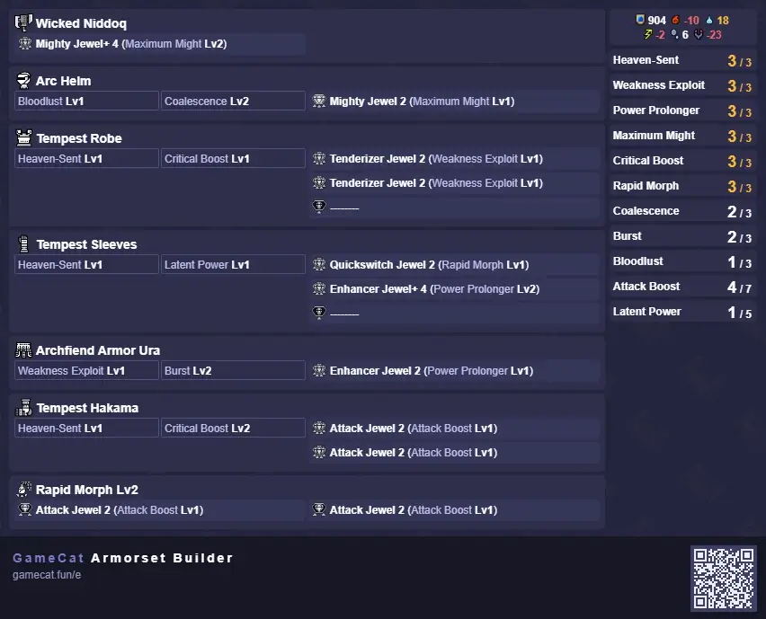

If you find this guide anywhere other than our website or the authors youtube channels, please let us know.
If you'd like to reference this guide, please read the Copyright Stuff section on the About us page.
This progression Guide is aimed at players who are new to the franchise, feel overwhelmed by all the options and choices the game offers, and those, who are just looking for a refresher or need some pointers for what to look out for during progression.
The Sets themselves aim to support you, from the start of the game all the way until the Endgame. From there, you should be in a great spot to follow the Endgame sets, accessible through the sidemenu or the buttons at the end of the page.
We don't really care about low rank gear. There's some staple skills found here or there, but the one Skill we really want on every set, Rapid Morph, is extremely limited this early on.
Most of the recommendations until RMRapid Morph becomes more accessible are optional, in case you don't want to be naked.
It’s a slightly different story for the Weapon choice, as there’s two options that can get you all the way into endgame that open up pretty much right out of the gate:
Weapon
Material
Where to Get it
Proto Iron Axe I (Ore Tree)
3x Iron Ore*
Shrine Ruins, Blue Ore*
Proto Iron Axe II (Ore Tree)
2x Icium
Frost Islands, Mining Ore
1x Earth Crystal
Shrine Ruins, Mining Ore
2x Iron Ore
Shrine Ruins, Blue Ore
*Proto Iron Axe I can also be bought for 600z.
If you don’t see the option to upgrade or craft yet, keep progressing, this list just helps identifying the earliest point in time you can obtain the material.
As for armor pieces, nothing is particularly great, as to be expected this early into the game. If you feel uncomfortable going naked, consider making the following pieces:

Open image in new tab
heres where text describing the set goes
Remember: If you don't see a monster mentioned here in your Quest List yet, just keep progressing. You can't miss anything, so don't worry about progressing too far or not completing every quest.
Piece
Material
Where to get it
Izuchi Helm
1x Monster Bone S
Gather any low rankAll of Kamura, 1-3* in the Gathering Hub Bonepile, hunting Great Izuchi can reward them too
2x Great Izuchi Pelt
Hunt Great Izuchi, the droprate for Pelts is very high
1x Izuchi Pelt
Hunt (non-Great) Izuchi, you have a high chance of carving their Pelt
Izuchi Mail
2x Great Izuchi Hide
Hunt Great Izuchi, look out for shiniessparkling objects on the ground, as they have a very high chance of being Hide
2x Great Izuchi Pelt
Hunt Great Izuchi, the droprate for Pelts is very high
1x Sharp Claw
Hunt and Carve (small) Izuchi and Jagras. Their Quests have an acceptable droprate and you can sometimes carve them directly. You don't need that many, luckily
Izuchi Coil
2x Great Izuchi Pelt
Hunt Great Izuchi, the droprate for Pelts is very high
1x Sharp Claw
Hunt Izuchi and Jagras, do their quests too
1x Izuchi Pelt
Hunt (non-Great) Izuchi, you have a high chance of carving their Pelt
Lagombi Greaves
2x Twisted Remains
Gather Bonepiles in Shrine Ruins
2x Lagombi Plastron
Hunt Lagombi, the Plastron has a very high chance to be rewarded from carves and just hunting it in general
2x Lagombi Pelt
Hunt Lagombi and Carve it, look out for shiniessparkling objects on the ground too
Hub 1*/Village 1-2* Set: Item List
Weapon
Material
Where to Get it
Improved Steel Axe
3x Dragonite Ore
Lava Caverns, mine Ore
2x Monster Bone L
Low Rank: Hunt Pukei-Pukei or Rathian or Somnacanth
The last combined upgrade for this weapon, from here, two main options open up. It’s up to preference which upgrade path you follow, both will be listed here.

Open image in new tab
It is now that we get access to our most important skill: Rapid Morph. Unfortunately, you won’t be able to max it out quite yet, but it’s a start. RMRapid Morph improves the speed and damage of our Morphs, which is the majority of the moves we want to use anyway.
Piece
Material
Where to get it
Volvidon Mail
1x Great Izuchi Hide
Hunt Great Izuchi, look out for shiniessparkling objects on the ground, as they have a very high chance of being Hide
2x Dragonite Ore
Lava Caverns, mine Ore
2x Volvidon Claw
Hunt Volvidon. CapturingHunt normally until a blue icon shows up on the top right, put down a trap and throw 2 Tranqbombs at it it increases your chances, but they're not terribly rare
2x Volvidon Shell
Hunt Volvidon, you can break its Back for an extra chance for one but overall the Shell is common
Volvidon Coil
2x Warm Pelt
45% Chance to carve from Kelbi
2x Jumbo Bone
Hunt Arzuros, Lagombi or Volvidon, they're a little rarer but still easy enough to come by. Popo can also reward them
2x Volvidon Rickrack
Break Volvidon's Back for a 70% chance to get one. You can also carve them and get them from quest rewards themselves at a lower chance
2x Paralysis Sac
More Volvidon, 40% chance to carve the Paralysis Sacs from it
Hub 2*/Village 3-4* Set: Item List
The end of Low Rank (LR), alongside split upgrade paths.
Exhaust Phials can KO monsters by hitting their face repeatedly and amp faster.
Power Phials are stronger but amp slower. This one also has an element to take into consideration. The amp generation will be a non-factor after a certain point in progression.
Weapon
Material
Where to Get it
Option 1: The Shredder I (Thunder Tree)
2x Zinogre Shocker
Hunt Zinogre. Break the back for a 70% chance to get the Shocker
3x Dragonite Ore
Lava Caverns, mine Ore
2x Firestone
Lava Caverns, mine Ore
1x Electro Sac
Hunt and Carve Khezu. Tobi Kadachi can reward them too, but carves are typically easier to get
The Shredder II (upgrades from Shredder I)
2x Diablos Shell
Hunt and carve Diablos, pretty common carve
3x Fulgurbug
Hunt Zinogre of any difficulty. Supposedly they're somewhat rare as they can neither be carved nor rewarded for Part Breaks.
Option 2: Elite Switch Axe I* (Ore Tree)
1x Commendation
6* Village:
Magnamalo + Zinogre
Tobi Kadachi + Mizutsune
Rathalos + Tigrex
3* Hub:
Bishaten + Almudron
Tigrex + Goss
Barroth + Tobi Kadachi + Magnamalo
2x Firestone
Lava Caverns, mine Ore
*You can skip this upgrade and craft the next weapon from scratch in High Rank.

Open image in new tab
Armor-wise, at Village 6* / Hub 3* Almudron is unlocked and our first really nice source of Rapid Morph and thus, a set upgrade.
This is a Helmet you should get used to, as it's upgrades in HRHigh Rank, Hub Quests 4-8* and in MRMaster Rank, anything in Sunbreak Hub will be recurring.
The Almudron Hands are great too, but require a Plate to craft. Generally speaking, Plates are rare items with low (1-3%) droprates, and as such i try to avoid requiring them for Progression Sets as much as possible. No point keeping you locked in any place longer than you need to be.
Piece
Material
Where to get it
Almudron Helm
1x Almudron Shell
Hunt and Carve Almudron, pretty common Item
2x Lightcrystal
Flooded Forest, mine Ore
3x Almudron Scale
Hunt and carve Almudron, alongside Shells, Scales are very common
1x Almudron Whisker
Break Almudron's Head for a 80% Chance to get the Whisker
New Armor Piece
With Village (or Hub 1*-3*) done, you’ll progress into HRHigh Rank, which is Hub only.
The armors available here are nothing too great, can skip if you want. If you feel extremely lacking in defense, Izuchi is an option. If you’re a particular enjoyer of Evade Extender 1, Wroggi feet are usable for that.
As for Weapon upgrades:
Same as in LRLow Rank, Hub 1-3*, All of Village, Hunt and Carve HRHigh Rank, Hub 4*+ Khezus, the Sacs are common enough from them
2x Pearl Hide
Hunt HRHigh Rank, Hub 4*+, breaking the Legs guarantees at least one Hide
General's Strongaxe I* (Ore Tree 2)
2x Gracium
(HR) Frost Islands, the White Ore specifically
2x Twisted Rockbone
Gather Bone Piles in Shrine Ruins (HR)
3x Dragonite Ore
Lava Caverns, mine Ore
*You can also craft this weapon from scratch instead, the 2x Golden Muck can be obtained from Low Rank Almudron and the 3x Quality Bones are from High Rank Bonepiles.
With this, the Power Shredder is at its highest upgrade until you progress into Master Rank.
A new rank, a new upgrade:
Weapon
Material
Where to Get it
General's Strongaxe II (Ore Tree 2)
2x Novacrystal
(HR) Frost Islands, the White Ore specifically
4x Basarios Carapace
Hunt High Rank Basarios, break the head for a 70% Chance to get one. Carapace is a common carve aswell
4x Monster Keenbone
Can drop as a reward from any of the following (high rank) hunts: Jyuratodus, Rathian, Barroth, Khezu, Pukei-Pukei, Aknosom. Slightly rarer drop as it again can't come from carves or partbreaks

Open image in new tab
Armor-wise, Volvidon makes a comeback. Do note that the feet have Evade Extender 2, which can seriously throw off your positioning but is great for getting around. If you decide against them, use the Low Rank Almudron Helmet, the rest of the pieces are not overly important (yet).
Slot
Gear
Skills
Head
Almudron OR whatever
Rapid Morph 1
Chest
Volvidon S
Rapid Morph 1
Hands
Anything Goes
Waist
Volvidon S
Rapid Morph 1
Feet
Volvidon S*
Rapid Morph 1, Evade Extender 2
As before in LR, you’ll want to use any 3 of those 4 pieces.
Piece
Material
Where to get it
Volvidon Mail S
1x Great Izuchi Hide
Target Reward: 21% Capture Reward: 26% Broken Part Reward: 20% (Tail) Carve Reward: 43% (Body) Dropped Material Reward: 30%, 60%
Target Reward: 15% Capture Reward: 26% Broken Part Reward: 30% (Back) Carve Reward: 40% (Body) Dropped Material Reward: 35%, 55%
New Armor Pieces
Make the Zinogre Chestpiece, the Anjanath Coil and the Remobra Feet. You’re 1 Rank away from your set finally coming together. Use the same pieces you used until now.
Nothing noteworthy here otherwise, so just move on. Also, no weapon upgrades. You can craft the Rathalos Coil S if you're luckier with his rare.:(
Alternatively, make either the Dober Coil or Baggi Coil S. Dober needs an Eroded Husk which you can gather from HR Bonepiles in Sandy Plains.
Weapon
Material
Where to Get it
Zinogre Mail S
1x Zinogre Plate
Hunt Zinogre, either Low or High Rank. Break the head Twice and cut the tail for best chances, High Rank has slightly better odds. It's the rare drop. Either grind this or go for a Talisman with Wex 1Weakness Exploit 1 or better.
1x Zinogre Claw+
Hunt Zinogre, break the front Legs, roughly 90% chance to get at least 1
3x Zinogre Electrofur
Hunt Zinogre, relatively common reward and carve
3x Zinogre Carapace
Hunt Zinogre, common carve to get from them
Rathalos Braces S
3x Inferno Sac
Several Monsters can drop this, but your best chances are HR Aknosom and HR Rathalos.
1x Rath Wingtalon+
High Rank Rathian and Rathalos, break the Wings for a good chance
4x Rathalos Scale+
High Rank Rathalos, cut the tail, break the head and carve it for the best Chance. It's a common item on paper but somehow it's also the one Item thats historically grindy for some reason
2x Uroktor Scale+
High Rank Uroktors, the tiny Leviathans in Lava Caverns that dig underground and shoot back up. Pretty common carve
Anjanath Waist S
2x Monster Hardbone
Capture HR Somnacanth for extra chances, most 6* Hub Quests reward those, for a list, see here (Kiranico, opens in new tab).
4x Anjanath Pelt+
High Rank Anjanath, relatively common carve from them
2x Anjanath Scale+
High Rank Anjanath, break the legs and Carve for a very good chance to get some.
1x Anjanath Gem
High Rank Anjanath's Rare Drop, another grind unfortunately. Can replace with Rathalos Waist if you're feeling more lucky about his rare.
Remobra Feet S
2x Stripe Hide
Carve from Remobra (small flying wyverns), roughly 30% chance in either Low or High Rank
1x Firecell Stone
HR Lava Caverns, mine Ore
2x Pukei-Pukei Scale+
High Rank Pukei, 40ish% chance when carving
1x Monster Hardbone
Capture HR Somnacanth, 14% chance to get 2, 7% from the rewards
Note: Those pieces are for the HR7+ set, they're not for use just yet.
The final HR upgrade of the exhaust phial choice is in HR7.
You'll spend most of your time unlocking and grinding for Decos here. If you have the Sunbreak DLC, feel free to make the set from MR and then come back to make it slightly faster.
Weapon
Material
Where to Get it
Conqueress (Ore Tree 2)
4x Rakna-Kadaki Carapace
Hunt Rakna-Kadaki, Carapaces are fairly common
2x Firecell Stone
HR Lava Caverns, mine Ore
2x Gold Rajang Pelt
Somewhat rare Rajang drop, it's about 10% per carve
4x Great Stoutbone
Rajang - 10% chance from the rewards only. Somewhat rare as a result, but still doable

Open image in new tab
This is a low-budget, RNG-FreeWhen MH people talk about RNG, it typically refers to stuff you cannot target-grind, like Decos in World or Talismans in every other MH. progression set. If you don't have Sunbreak, or want to challenge
yourself first, you can also try to get the full Valstrax Set, either at HR 100 or through his Event Quest. That set, with appropriate Decorations, will be good enough to skip every single MR set until Postgame-Progression (MR10+).
Additionally, you now have access to most of the decorations, including some important ones.
It's heavily recommended to craft the important ones now, or immediatly after you made your first MR set, assuming you have the Sunbreak DLC.
The following Decorations will be relevant throughout the remainder of Base Rise, aswell as all of Sunbreak and just make Setbuilding so much easier.
This guide assumes that you have the following decos in Master Rank:
Total mat requirements
Deco Skill (DecoName)
MaterialComplete! Material list, not per deco
Where to Get it
3x Speed Sharpen 1 (Grinder Jewel 1)
3x Great Izuchi Tail+
HR Great Izuchi, break the tail, 80%
6x Rath Wingtalon+
High Rank Rathian and Rathalos, break the wings for a very high chance to get the Wingtalons
6x Aquaglow Jewel
Most quests in Hub 4*-6* (chances are you just have enough from progressing)
3x Weakness Exploit 1 (Tenderizer 2)
3x Narga Medulla
Hunt Nargacuga, Cut the tail. 12% Chance from the tailcarve, 7% from the Body Carve, 5% as quest reward
9x Rakna-Kadaki Spike
Rakna-Kadaki, break the legs (not the Webbings, the actual Legs) and the Glowgut (yellow butt), then capture it
9x Almudron Claw+
HR Almudron, 90% chance when breaking the forelegs
15x Lazurite Jewel
Welcome to the actual Pain Point of this. These drop from 7* Hub Quests, mostly from the Apexes. Arzuros and Rathian probably die the fastest, but any of them are fine choices
1x Attack Boost 1 (Attack 2)
1x Magnamalo Plate
Like any other Plate, you can farm this either in Low Rank1% Shiny 1% Carve 3% Break Head 3% Capture Reward 2% Quest Reward for quicker kills but lower chances, or in High Rank.
3x Goss Harag Claw+
80% Chance when you break the Arms, actual arms, not just the Ice
3x Rajang Blackfur
Common Carve from Rajang
5x Bloodrun Jewel
Most hub 6* and 7* Quests reward them
1x Rapid Morph 1 (Quickswitch 2)
1x Somnacanth Claw+
HR Somnacanth, break the arms for 80% Chance, then capture
2x Rakna-Kadaki Silk
Rakna-Kadaki, break the legs
2x Tigrex Claw+
HR Tigrex, 80% Chance when you break the claws
3x Bloodrun Jewel
Same as for the ABAttack Boost Deco above, most 6* and 7* Hub Quests reward these
Additionally, the MRMaster Rank portion of this guide assumes you obtain the following Decorations, which will be the last Deco Grind until the Post-Game Progression:
Decoration
Material
Where to Get it
3x Critical Boost (Critical 2)
3x Almudron Plate
Almudron's Rare; Same deal as before, Low Rank has lower chances but is faster, High Rank has higher chances. Make sure to cut and carve the tail and break the head
6x Magnamalo Horn+
HR Magnamalo, 92% for Headbreak, 25% for Capture
15x Lazurite Jewel
7* Hub quests (Apexes, Advanced etc)
6x Apex Blaze Sac
Apex Rathalos, 8% from Quest Rewards, 12% from Carves, 35% from breaking the Head.
2x handi deco
2x Purple Magna Orb
High Rank Magnamalo Rare, cut the tail and break the Head, it's a toss up between capturing and killing. Good luck.
16x Lazurite Jewel
7* Hub quests (Apexes, Advanced etc)
12x Daora Dragon Scale+
Somewhat common reward for hunting Kushala Daora. Kush unlocks at HR30, so feel free to come back to this after making your first MR set
6x Daora Horn+
80% Chance when breaking the Head (can't break above 35% health), 17% from carving
1x Protective Polish (Sharp 2)
1x Great Izuchi Tail+
HR Great Izuchi, 80% when breaking the Tail
3x Narga Razor
HR Nargacuga, break the wingblades and you're guaranteed to get at least one
4x Magnamalo Blade+
HR Magnamalo, 80% chance when breaking the Arms
4x Lazurite Jewel
7* Hub quests (Apexes, Advanced etc)

Open image in new tab
This guide will assume decorations and a charm of at least 2 level 2 slots from here on. Skills on the charm can replace decorations that would otherwise occupy level 2 slots, otherwise treat them as bonus.
MR1 gives us access to the Barroth Hands and Chest, as well as the Hermitaur Waist. MR2 brings the Blood Orange Bishaten, and with it, the Orangaten Greaves. Finally, in MR3, Almudron Helmet gets replaced with it's MR equivalent.
Putting all these together results in the set pictured.
In terms of Weapons, it's ultimately preference between Conqueress and Shredder. Shredder is easier to manage in solo, Conqueress might yield better results in multiplayer due to its faster amp. Shredder will however be undisputably better by late MR4.
In MR1, both weapons can be upgraded:
Weapon
Material
Where to Get it
Option 1: The Powershredder+ (Thunder Tree)
3x Sapphiron Ore
Jungle, mine Ore
5x Eltalite Ore
Mine Ore in MR, any map
1x Awegite
MR Shrine Ruins, mine Ore
Option 2: Conqueress II (Ore Tree)
2x Frocium
MR Frost Island, mine Ore
2x Twisted Stiffbone
MR Shrine Ruins, gather Bonepiles
3x Eltalite Ore
Mine Ore in MR, any map
Material Requirements for MR1 Weapon Upgrades
In MR3, you can upgrade weapons again:
Weapon
Material
Where to Get it
Option 1: The Lightning Shredder (Thunder Tree)
2x Monster Slogbone
Aurora Somnacanth or Shogun Ceanataur
1x Ultimas Crystal
Mine Ore in MR, any map
Option 2: Conqueress III (Ore Tree)
1x Centuria Ore
Citadel, mine Ore
2x Purecrystal
MR Flooded Forest, mine Ore
4x Basarios Cortex
Basarios
4x Monster Slogbone
Aurora Somnacanth or Shogun Ceanataur
Material Requirements for MR3 Weapon Upgrades
Progress through MR3 and 4 until you unlock the last Switch Skills, just before the second urgent quest.

Open image in new tab
Just before the second Urgent quest, you’ll unlock the Counter, get very accustomed to it.
Hunt a Magma Almudron to unlock and craft the Switcher Rampage Deco, equip it. It grants Phial Switch Boost, which boosts phial regeneration on morphs to axe, making morph loops gauge positive, boost phial effects on sword hits of morph attacks by 10%, and makes phials apply
to axe hits of morph attacks.
The Gloomcloth for the Death Stench pieces can be obtained from the Meowcenaries, by sending them to sparkling bonepiles.
This set (or similar) will be your baseline going into Post- and potentially Endgame.
MR5 and 6 don’t offer a whole lot to improve it, so just stick to what you have until MR10.
Clear the upcoming Urgent Quests until you are tasked to hunt a Chaotic Gore Magala. Do so immediately to unlock a new melding method. A lot of options open up from here.
Your next goal is upgrading your weapon:
Weapon
Material
Wicked Niddoq (Velkhana)
4x Velkhana Fellwing
3x Velkhana Hardclaw
2x Velkhana Crownhorn
1x Velkhana Crystal
Material Requirements for Wicked Niddoq/Velkhana Switch Axe
The Wicked Niddoq is an insanely strong progression weapon, coming with natural purple sharpness, a level 3 rampage slot to fit Phial Switch Boost (PSB) and vastly more Attack (Raw) than anything else you can access at this point.
From here, hunt Amatsu until you can make its armor.
Note: This guide assumes better charms from here on out, don’t worry if you don’t have them yet, just upgrade as you get there.
The following set should carry you over into the Afflicted grind and, ultimately, the endgame sets.

Open image in new tab
As you progress, add Ice Attack 5 and slowly transition into AB 7, add Intrepid Heart 1 as you unlock more decos. You can drop to PowPro 2 and add your preferred comfort skills that way, too. From here, the next set upgrade will be at MR140 and 160.
When you feel like you can upgrade from the above sets, specifically into the Element Sets, you're ready to follow the Endgame Sets.